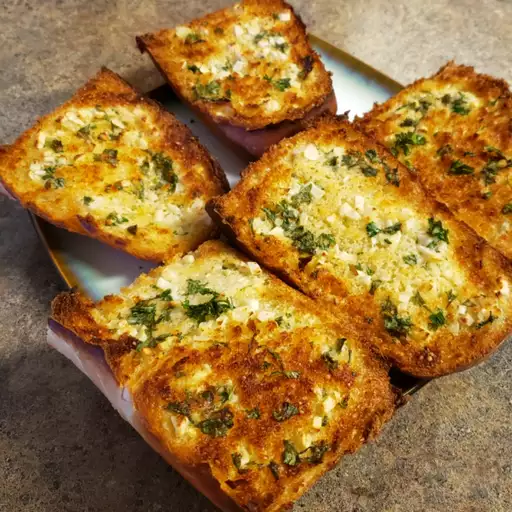

Garlic Bread

Description
This recipe is a simple mix of household ingreidents that combine for an appetizing snack.
Ingredients
- 3 heads of garlic
- 2 tablespoons of olive oil
- 1 pound loaf of Italian bread
- 1/2 cup of softened butter
- 2 tablespoons of grated Parmesean cheese
- 1 tablespoon of freshly chopped parsley
Steps
- Preheat oven to 350 degrees F
- Slice the tops off of the garlic heads, so the tip of each clove id exposed. Place garlic heads, cut-sides up, on a baking sheet; drizzle tops with olive oil.
- Bake in the preheat oven until garlic is soft, about 30 minutes.
- Set the oven to broil.
- Slice loaf in half horizontally; place cut-side up on a baking sheet.
- Squeeze garlic cloves from their skins into a medium bowl. Stir in butter, Parmesean cheese, and parsley until well blended. Spread onto the cut sides of bread.
- Broil bread until toasted, about 5 minutes.